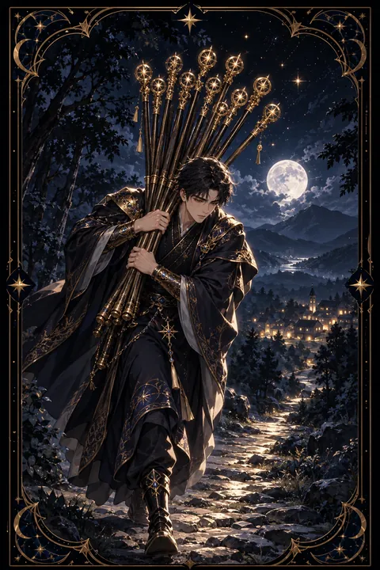

완드 10 카드 — 혼자 짊어진 무거운 책임
완드 10 카드 한눈에 보기
완드 10 카드 상징 읽기

동네보살의 카드 그림은 전통 라이더–웨이트 덱의 뜻을 새 그림으로 옮긴 것입니다. 아래 상징 설명은 전통 덱의 그림을 기준으로 합니다.
완드 10의 인물은 열 개의 지팡이를 한데 묶어 두 팔로 끌어안고 허리를 깊이 굽힌 채 걸어갑니다. 지팡이 숫자 10은 한 흐름의 끝을 뜻하며 시작했던 일이 가장 무거운 형태로 완성되었음을 보여 줍니다.
지팡이 다발이 얼굴을 가리고 있어 인물은 앞을 제대로 보지 못합니다. 짐에 치여 방향 감각을 잃고 눈앞의 일만 처리하는 상태를 상징합니다. 짐을 등에 지지 않고 품에 안은 자세는 효율보다 책임감이 앞선 태도를 드러냅니다.
멀리 보이는 마을과 집은 목적지가 그리 멀지 않다는 희망의 표시입니다. 발밑에 갈아엎어 놓은 밭은 그동안의 수고가 결실로 이어질 땅이라는 점을 알려 줍니다. 짐을 조금만 덜어 내면 도착이 훨씬 수월해진다는 메시지가 그림 전체에 흐릅니다. 숫자 10이 한 바퀴를 다 돈 끝이라는 점에서 이 짐을 내려놓으면 새로운 시작이 기다린다는 뜻도 함께 읽힙니다.
완드 10 카드 정방향 뜻
정방향 완드 10은 너무 많은 책임을 한꺼번에 짊어진 상태를 보여 줍니다. 성공과 성장이 이어지면서 맡은 일도 함께 불어났고 이제는 그 무게가 기쁨보다 부담으로 느껴지는 시기입니다.
이 카드는 목표가 멀지 않다는 사실도 함께 전합니다. 지금의 수고는 헛되지 않으며 조금만 더 가면 결실을 거둘 수 있습니다. 문제는 방식입니다. 모든 일을 혼자 처리하려는 태도가 속도를 늦추고 건강과 관계까지 지치게 만들 수 있습니다.
해야 할 일을 목록으로 적은 뒤 직접 할 일과 맡길 일을 나눠 보세요. 거절하거나 미뤄도 괜찮은 일은 생각보다 많습니다. 짐을 덜어 낸 만큼 남은 길을 끝까지 걸어갈 여유가 생깁니다. 성실함은 이 카드의 가장 큰 장점이지만 그 성실함이 자신을 소진시키지 않도록 쉬는 시간도 할 일 목록에 넣어 두세요.
완드 10 카드 역방향 뜻
역방향 완드 10은 상반된 두 갈래의 의미를 품고 있습니다. 첫째는 쌓인 짐을 더 이상 감당하지 못해 무너지는 상태이고 둘째는 마침내 불필요한 짐을 내려놓는 해방의 순간입니다.
거절하지 못해 떠안은 일이 한계를 넘었다면 몸과 마음이 먼저 신호를 보냅니다. 의욕이 떨어지고 작은 일에도 쉽게 지치며 무엇부터 해야 할지 판단이 흐려질 수 있습니다. 이때 쏟아진 짐을 모두 다시 주워 담으려 하면 같은 일이 반복됩니다.
이 카드는 정리의 기회로 삼는 것이 좋습니다. 꼭 내가 해야 하는 일만 남기고 나머지는 나누거나 돌려주세요. 도움을 요청하는 것은 책임을 버리는 일이 아니라 끝까지 책임지기 위한 선택입니다. 짐을 내려놓은 뒤에야 비로소 가야 할 방향이 선명해집니다. 짐을 비운 자리에 비로소 새 힘이 들어섭니다.
연애에서 완드 10 카드
솔로라면 일이나 가족 문제로 여유가 없어 연애를 뒤로 미루고 있을 가능성이 큽니다. 마음의 공간이 생겨야 새로운 인연도 들어올 수 있으니 먼저 일상의 짐을 조금 덜어 내는 것이 우선입니다. 쉬는 시간을 확보하면 만남의 기회도 자연스럽게 늘어납니다.
이미 교제 중인 사이라면 한쪽이 관계의 무게를 지나치게 떠안고 있지 않은지 살펴볼 때입니다. 약속을 챙기고 기분을 맞추고 문제를 해결하는 역할이 한 사람에게 쏠리면 사랑이 의무처럼 느껴집니다. 힘든 점을 솔직하게 말하고 역할을 나누세요. 무거운 대화만 오가던 사이라면 함께 웃을 수 있는 가벼운 시간을 일부러 만드는 것도 도움이 됩니다. 둘 중 누구도 혼자 버티지 않도록 서로의 짐을 물어봐 주는 습관이 관계를 오래 지켜 줍니다. 작은 일이라도 상대에게 부탁해 보는 연습이 그 출발점이 됩니다.
재회·속마음 질문에서 완드 10 카드
재회를 묻는 질문에 완드 10이 나왔다면 지금은 관계를 되돌리기 전에 마음의 짐부터 정리할 필요가 있다는 뜻입니다. 지난 관계에서 한쪽이 너무 많은 것을 떠안았던 경험이 헤어짐으로 이어졌을 가능성이 있습니다. 같은 방식 그대로 다시 시작한다면 같은 무게가 반복될 뿐입니다. 상대에게 연락하기 전에 무엇을 바꾸고 싶은지와 서로 어떤 역할을 나눌 수 있을지 먼저 정리해 보세요. 혼자 모든 것을 책임지려는 태도를 내려놓는 것만으로도 관계의 온도가 달라질 수 있습니다. 카드가 뒤집혀 있다면 서로 내려놓을 것을 내려놓은 뒤 가벼운 마음으로 다시 마주할 여지가 생깁니다.
일·금전에서 완드 10 카드
일에서는 업무가 한꺼번에 몰려 과부하가 걸리기 쉬운 시기입니다. 책임감이 강한 만큼 주변에서 일을 계속 맡기고 본인도 거절하지 못해 부담이 커집니다. 끝이 가까운 프로젝트라면 조금만 더 힘을 내되 새로운 업무는 당분간 사양하는 것이 현명합니다.
씀씀이 쪽을 보면 가족이나 지인의 사정까지 떠안아 지출이 늘어날 수 있습니다. 보증이나 대신 갚아 주는 일은 신중하게 판단하고 고정 지출을 점검해 줄일 수 있는 부분을 찾아보세요. 업무 목록을 윗사람과 공유해 우선순위를 함께 정하면 짐을 덜어 낼 길이 열립니다. 오늘 끝낼 일과 다음 주로 넘길 일을 나누는 것만으로도 숨 쉴 여유가 생깁니다. 맡은 일 가운데 넘길 수 있는 것 한 가지를 오늘 골라 보시기 바랍니다.
완드 10 카드는 예일까 아니오일까
지금 상태로는 짐이 너무 무거워 원하는 결과까지 가기 벅차다는 카드라서 아니오로 봅니다. 맡은 일을 덜어 내고 도움을 받는다면 답이 바뀔 수 있고 역방향은 짐을 내려놓는 전환점이라 조건부에 가깝습니다.
자주 묻는 질문
완드 10 카드 역방향은 나쁜 뜻인가요?
역방향 완드 10은 상반된 두 갈래의 의미를 품고 있습니다. 첫째는 쌓인 짐을 더 이상 감당하지 못해 무너지는 상태이고 둘째는 마침내 불필요한 짐을 내려놓는 해방의 순간입니다.
완드 10 카드가 연애 질문에 나오면요?
솔로라면 일이나 가족 문제로 여유가 없어 연애를 뒤로 미루고 있을 가능성이 큽니다. 마음의 공간이 생겨야 새로운 인연도 들어올 수 있으니 먼저 일상의 짐을 조금 덜어 내는 것이 우선입니다. 쉬는 시간을 확보하면 만남의 기회도 자연스럽게 늘어납니다.
타로 카드는 어떻게 뽑나요?
타로 카드 페이지에서 78장을 섞으면 그중 22장이 펼쳐집니다. 마음이 가는 세 장을 고르면 과거·현재·미래 자리에 놓이고, 한 장씩 뒤집어 자리와 방향에 맞는 풀이를 읽습니다. 정방향과 역방향은 섞는 순간 정해집니다.